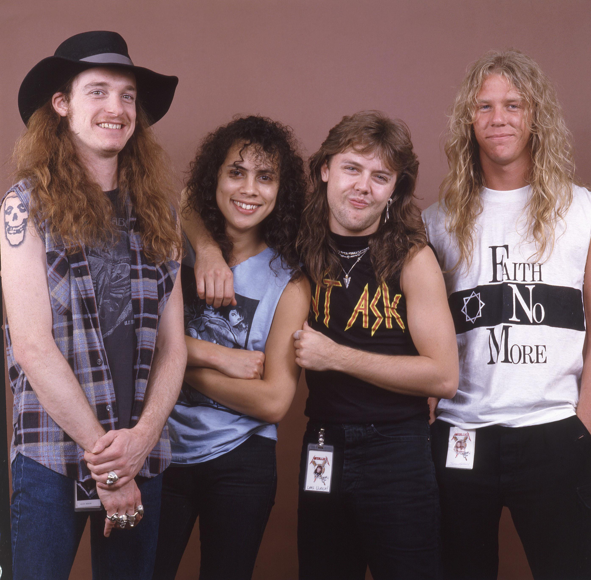

Metallica
Metallica est un groupe américain de heavy metal, thrash metal ou speed metal, originaire de Californie. Il est considéré comme l'un des plus grands groupes de metal de tous les temps, formé à Los Angeles en 1981.
- James Hetfield (chanteur et guitariste rythmique)
- Kirk Hammett (guitariste lead)
- Cliff Burton (bassiste, de 1981 à 1986)
- Jason Newsted (bassiste, de 1986 à 2001)
- Robert Trujillo (bassiste, depuis 2003)
- Lars Ulrich (batteur)